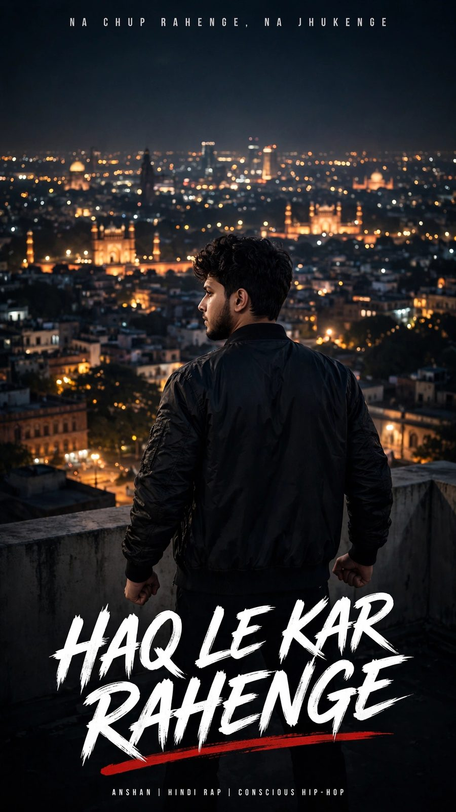
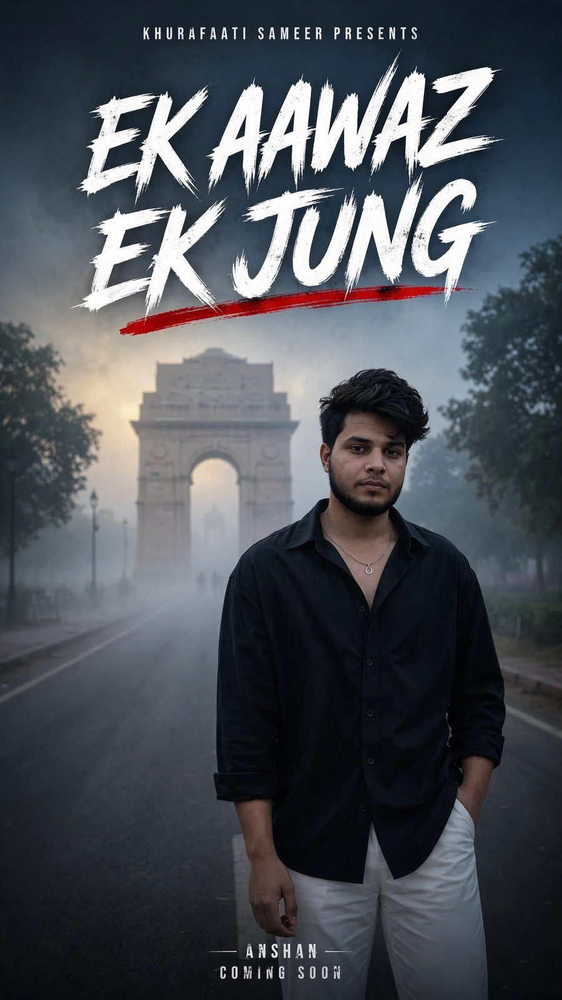

Web / Portfolio01
Khurafaati Sameer — Personal Portfolio
A cinematic personal-brand website combining storytelling, writing, digital creativity and professional identity.
Explore case study →A growing collection of web experiments, creative work, writing and digital projects. Some are personal/demo projects; they are presented here as part of my creative portfolio.
A cinematic personal-brand website combining storytelling, writing, digital creativity and professional identity.
Explore case study →
A responsive business-style landing page built as a personal/demo project to showcase frontend and visual design skills.
View live demo →
A personal publishing experiment focused on writing, stories, ideas and a distinctive editorial identity.
View live demo →
A long-form storytelling project built around emotions, memory, relationships and the cinematic side of written words.
Explore case study →
AI-assisted cinematic posters and visual storytelling exploring voice, identity, protest, atmosphere and character.
Explore case study →
Short-form visual storytelling where an emotion, thought or moment becomes a frame-by-frame story.
Watch channel →